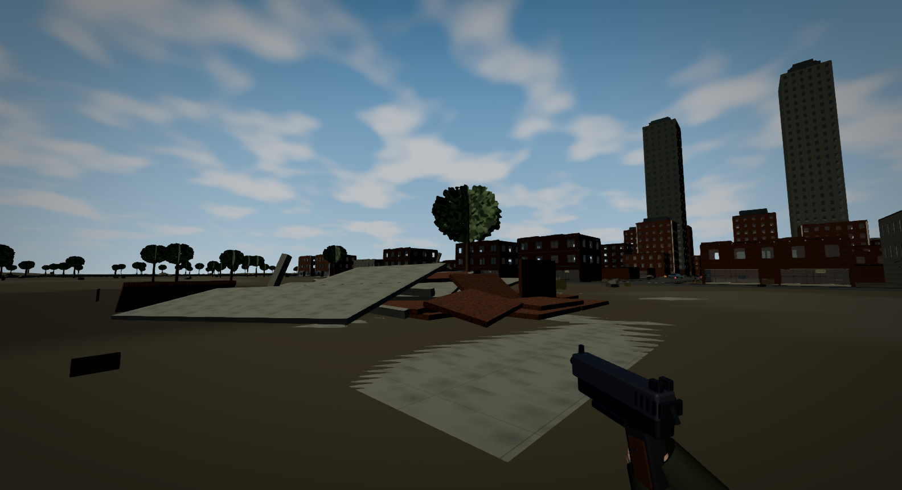
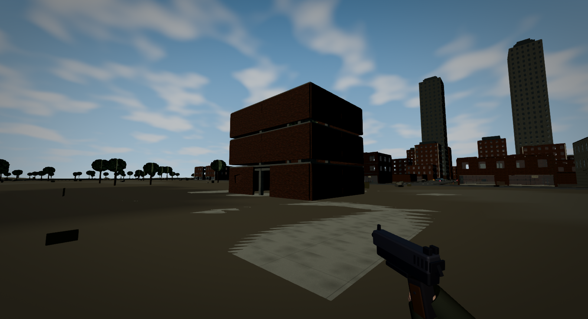
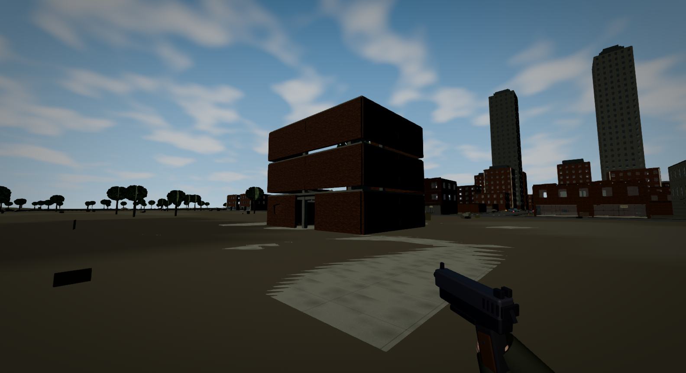

Native packaged WebGL2 captures. A real jointed fixture, not full city conversion. No dust conceals these frames. Art and some slabs remain coarse; 60 fps has not been certified.



The weak column is in the rear corner; this front camera hides some of the local collapse. The physics audit measures its roof material height independently. Full-collapse capture retained 118 pieces and source mass; 43 secondary jobs were deferred. Awake count exceeded the prototype target.